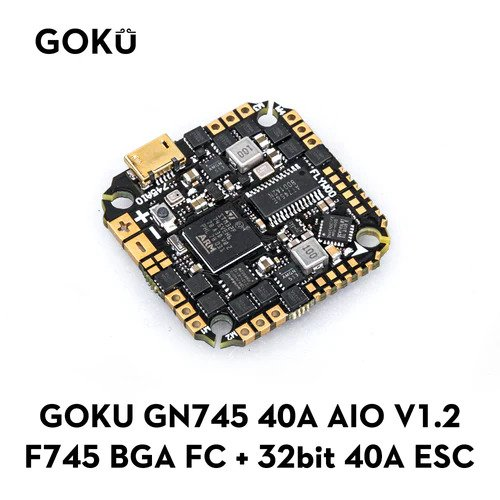
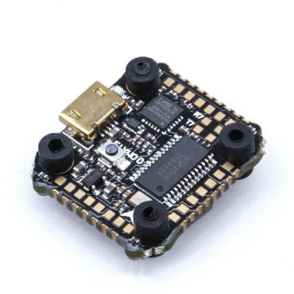
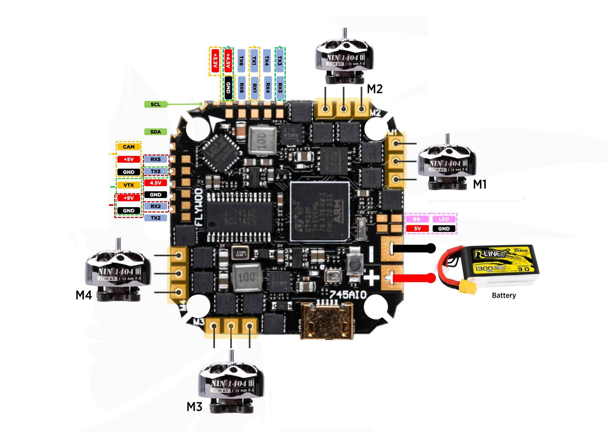
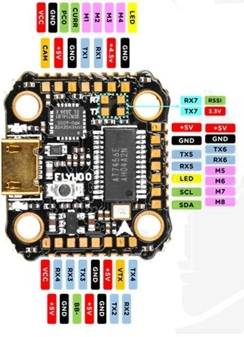

Flywoo GOKU GN 745 AIO with 40A ESC/ Nano¶
The Flywoo GOKU GN 745 AIO is an autopilot produced by [Flywoo](https://flywoo.net/).
{kind=link}
The Nano version is a smaller reduced feature set version
{kind=link}
Where To Buy¶
Specifications¶
Processor
STM32F745VG ARM (216MHz), 1MB Flash
Integrated 4 output, BLHeli-32 40A ESC (AIO version only)
Sensors
InvenSense MPU6000 IMU (accel, gyro)
BMP280 barometer
Voltage & 100A Current sensor (AIO version only)
Power
7.4V ~ 25V DC input power (4S MAX for Nano version)
5V 2A BEC for peripherals
9V 1.5A BEC for video
Interfaces
7x UARTS
10x PWM outputs, first 4 are internally connected to 4in1 40A BLHeli32 ESC.
I2C port for external compass, airspeed sensor, etc.
USB port
Camera input/ VTX output
Built-in OSD
Size and Dimensions AIO
33.5mm x 33.5mm (25.6 x 25.6mm mount pattern)
8.5g
Size and Dimensions Nano
22mm x 23.5mm (16mm x16mm mount pattern)
2.3g
Pinouts¶
AIO
{kind=link}
Nano
{kind=link}
Default UART order¶
SERIAL0 = console = USB
SERIAL1 = Telemetry1 = USART1
SERIAL2 = Telemetry2 = USART2
SERIAL3 = RC Input = USART3
SERIAL4 = USER = USART4
SERIAL5 = USER = UART5
SERIAL6 = GPS = USART6
SERIAL7 = ESC Telem = UART7 (RX tied to ESC telemetry) See blheli32-esc-telemetry
UART3 supports RX and TX DMA. UART1, UART2, UART4, and UART6 supports TX DMA. UART5 and UART7 do not support DMA. Serial port protocols (Telem, GPS, etc.) can be adjusted to personal preferences.
RC Input¶
RC input is configured on the RX3 (UART3_RX) pin. It supports all RC protocols except PPM. See Radio Control Systems for details for a specific RC system. SERIAL3_PROTOCOL is set to “23”, by default, to enable this.
SBUS/DSM/SRXL connects to the RX3 pin but SBUS requires that the SERIAL3_OPTIONS be set to “3”.
FPort requires connection to TX3 and SERIAL3_OPTIONS be set to “7”.
CRSF also requires a TX3 connection, in addition to RX3, and automatically provides telemetry. Set SERIAL3_OPTIONS to “0”.
SRXL2 requires a connection to TX6 and automatically provides telemetry. Set SERIAL3_OPTIONS to “4”.
Any UART can be used for RC system connections in ArduPilot also, and is compatible with all protocols except PPM. See Radio Control Systems for details.
PWM Output¶
The GOKU GN 745 AIO supports up to 8 PWM outputs. The pads for motor output ESC1 to ESC4 on the above diagram are the first 4 outputs, there are four additional pads for PWM 5-8. All 8 outputs support DShot as well as all PWM types.
The Nano version has 4 esc signals, current and voltage sense inputs on an external connector. The remaining outputs are on solder pads.
The PWM are in 5 groups: 1/2/7/8, 3/4, 5, 6
Channels within the same group need to use the same output rate. If any channel in a group uses DShot then all channels in the group need to use DShot. PWM 1-4 support bidirectional DShot.
Neopixel Output¶
The LED pin is PWM output 9 and is default setup for use with a NeoPixel 4 led string for notifications.
Battery Monitor¶
The board has a built-in voltage and current sensors.
The correct battery monitor parameters are:
BATT_MONITOR = 4
BATT_VOLT_PIN = 13
BATT_VOLT_MULT ~ 10.9
BATT_CURR_PIN = 12
BATT_AMP_PERVLT ~ 28.5 (when using AIO version)
These are set by default in the firmware and shouldn’t need to be adjusted.
Compass¶
The GOKU GN 745 AIO does not have a builtin compass but it does have an external I2C connector.
Loading ArduPilot onto the board¶
Initial firmware load can be done with DFU by plugging in USB with the bootloader button pressed. Then you should load the “with_bl.hex” firmware, using your favourite DFU loading tool.
Once the initial firmware is loaded you can update the firmware using any ArduPilot ground station software. Updates should be done with the xxxxxxxxxx.apj firmware files.
Firmware¶
Firmware for this board can be found here in sub-folders labeled “FlywooF745” for the AIO or “FlywooF745Nano” for the Nano version.
[copywiki destination=”plane,copter,rover,blimp”]